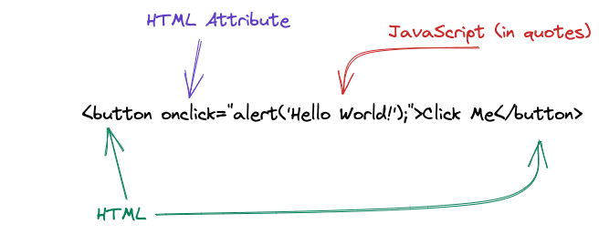
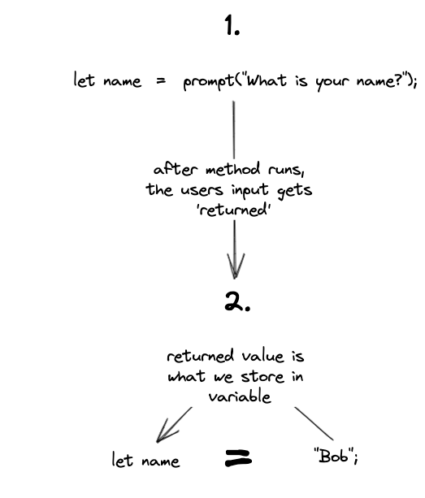

Alert, Prompt and Confirm
The browser gives us many built-in tools (APIs) that we can interact with in our JavaScript code. These include:
alert()prompt()confirm()
These tools are methods we can access as part of the
window object, similar to the document object
we used in 1-2.
These are typically used for prototyping, and not for production code
Alert
alert() is used to display a message to the user. It is
typically used for debugging, or to display a message to the user.
alert() takes one argument, which is the message you want
to display to the user.
window.alert("Hello World!");
Lets also take this opportunity to try another method of adding JavaScript to our page: inline JavaScript.

Notice how I didn't have to type window.?
Some methods are so commonly used that you can call them directly.
That pattern continues for prompt() and confirm() as well.
I recommend against inline JavaScript, but it is important to know it is possible, as you will probably see it in the wild one day.
Prompt
prompt() is used to get input from the user. It takes one
argument, which is the message you want to display to the user.
prompt("What is your name?");
The prompt method is going to return a value, which we can store in a variable.. but what does return mean?

Lets try and obtain a name from prompt and then display it inside this span tag:
Hi, No-Name!
Confirm
confirm() is used to get a yes or no answer from the user.
It takes one argument, which is the message you want to display to the
user.
confirm() will return a boolean value (true or false), which we can use to
determine what to do next.